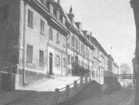
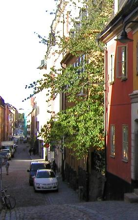
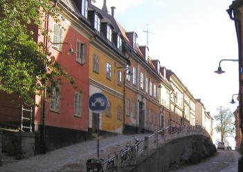
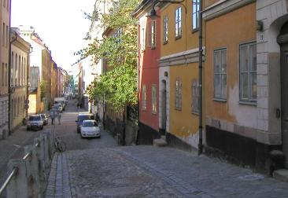
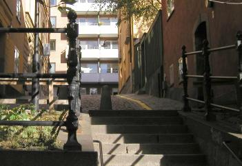
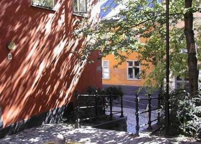

|

 Österut. Brännkyrkagatan 24-20 vid Ugglegränd 1965. Österut. Brännkyrkagatan 24-20 vid Ugglegränd 1965.
Brännkyrkagatan 22 (den närmaste porten på bilden)
Huset byggdes 1760. Här bodde 1770 bisittaren i stenhuggarämbetet Johan Petter Blom, 50 år, med sin hustru Elisabet, 53 år, och dottern Christina Lovisa, 14 år. Sönerna Jan-Erik, 21 år, och Gustav, 18 år, var båda stenhuggargesäller hos fadern. Till hushållet hörde stenhuggarmästarens fyra lärgossar och en piga. Dessutom hyrde sex personer in sig i huset. Byggnaden är ett av de bäst bevarade 1700-talshusen på Östra Mariaberget både vad gäller exteriören och interiören. Brännkyrkagatan 20 (nästa port) Stenhuggaren Johan Petter Blom, som ägde grannfastigheten, köpte den avbrunna tomten 1765. År 1772 lät han uppföra denvästra delen av huset med fem fönsteraxlar. Bloms flyttade nu in och sålde det gamla huset. Familjen bodde i våningen en trappaupp, som var husets finaste, i knappt tre år. År 1775 köpte Blom fastigheten vid Hornsgatan 34 och sålde Brännkyrkagatan 20 tillsjökaptenen i handelsflottan Anders Norman. År 1832 byggdes husets östra del till som en trogen kopia av den västra delen.Denna del av fastigheten var tidigare trädgård. Brännkyrkagatan 24 Det mycket breda huset uppfördes 1761. Det lilla gårdshuset tillkom 1765. Huset har brutet tak med kupor samt gavelparti motgränden.

Brännkyrkagatan 26 bakom lövverket. 2004
|
| 
Österut. Brännkyrkagatan 24-20 vid Ugglegränd 2004.
Västerut. 2004. Nr 20 närmast till höger, nästa port nr 22. Ugglegränd efter röda nr 24.
Ugglegränd 3/Brännkyrkagatan 24 närmast till höger. 2004
Från norr. Ugglegränd. Brännkyrkagatan 26
Murarmästare Wilhelm Elies uppförde 1768 husets hörnhalva som har flygel mot Ugglegränd. Husets västra halva byggdes iflera omgångar 1768-75 och inköptes 1786 av Elies, som gav detsammanbyggda huset en enhetlig fasad åt Brännkyrkagatan. Fasaden åt Ugglegränd är förvanskad genom senare påbyggnaderoch hyvling. |